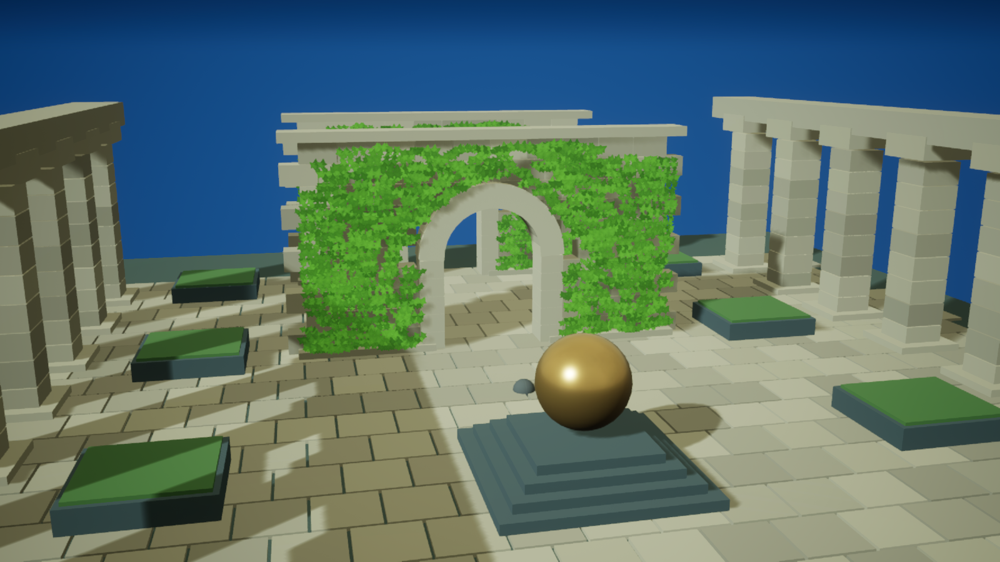
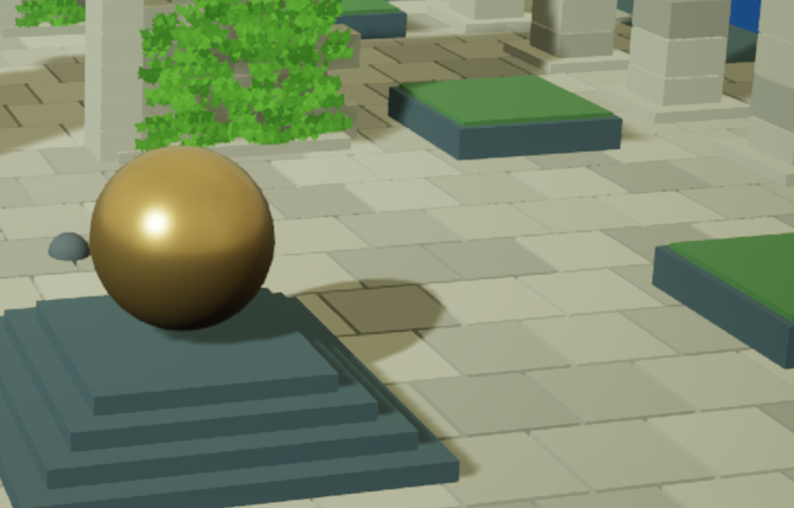

Unreal Engine · 场景渲染实验
庭院阴影预算对照
级联数量、覆盖距离与分辨率的联合取舍
D3D11 · ES3.1 移动预览 / RTX 4080
CSV 系统分辨率 888 × 500 · 独立截图 1600 × 900

庭院预算配置全范围配置整帧 GPU · 全范围 → 庭院预算ms · 六轮批次 P50 中位数
ShadowDepthsms · 阴影深度绘制
阴影 Draw Call14 → 10同一场景、相机与光照
配置
| 项目 | 全范围 | 庭院预算 |
|---|---|---|
| 级联数量上限 | 4 | 2 |
| CSM 分辨率上限 | 2048 | 1024 |
| 阴影距离缩放 | 1.0 | 0.3 |
| 场景实例数 | 958 | 958 |
| ISM 组件组 | 10 | 10 |
三个设置组成一套预算配置。本组数据反映联合配置的效果，未分离各参数的独立收益。
成本分布
| GPU 阶段 | 全范围（ms） | 庭院预算（ms） |
|---|
六轮 ABBAAB，每轮读取第 300–779 帧，截图位于第 850 帧。移动预览在桌面 GPU 上运行，结果不代表手机硬件性能。页面呈现离线运行画面。
局部画质差异

展台、植被与地面阴影边缘存在可见变化。当前对照仅覆盖固定视点，移动镜头的级联过渡仍需验证。场景使用原创生成布局、本人制作的藤蔓和 UE 引擎基础资源。
运动镜头对照
关卡序列驱动同一相机轨迹，ES3.1 独立运行逐帧截图。20fps 固定模拟、每两帧采集；视频不用于性能测量。
拆开三个设置，分别观察
同一庭院，分别只调整距离、分辨率或级联上限。每种配置独立运行三次，表中保留批次范围；图像选用各配置第一次运行截图。
本批计时存在明显波动。第 4、7、10 轮多个 GPU 阶段同时变慢，原因尚未确定。下表保留全部数据作为诊断记录，当前只用重复一致的绘制计数解释配置差异，不计算单变量加速比例。
| 配置 | GPU ms | GPU 范围 ms | ShadowDepths ms | 深度耗时范围 ms | 阴影 Draw |
|---|
每配置统计三批 P50 的中位数，范围为三批 P50 的最小值与最大值。较小整帧差异可能落在批次波动内；图片变化与阶段计时应一起判断。